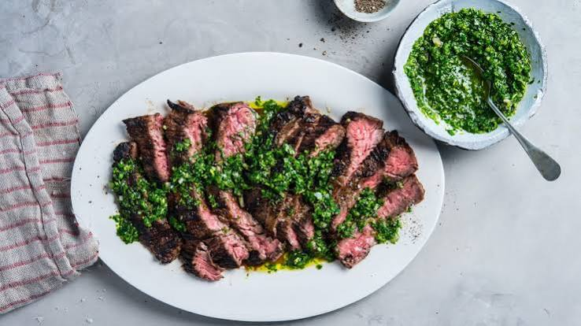

Home
Skirt Steak with Chimichurri Sauce

Sizzling, juicy steak topped with a fresh , garlicky herb sauce that burst with flavor in every single bite!
Ingredients Steak
- Skirt Steak: 1 piece (about 150 to 200 grams)
- Olive Oil: 1 teaspoon (to coat the meat)
- Seasoning: A good pinch of salt and black pepper
Ingredients Sauce
- Fresh Parsley: 2 tablespoons (finely chopped)
- Garlic: 1 clove (peeled and minced)
- Olive Oil: 1 tablespoon
- Red Wine Vinegar: 1 teaspoon
- Dried Oregano: A tiny pinch
- Red Pepper Flakes: A tiny pinch (for a little kick)
Steps
- Stir the chopped parsley, minced garlic, oregano, red pepper flakes, vinegar, and 1 tablespoon of olive oil in a small bowl.
- Pat the meat dry, rub it with 1 teaspoon of olive oil, and sprinkle both sides with salt and pepper.
- Cook the steak in a smoking hot pan for 2 to 3 minutes, flip it over, and cook for another 2 minutes.
- Let the steak rest on a plate for 5 minutes, slice it across the grain into thin strips, and spoon the sauce on top.